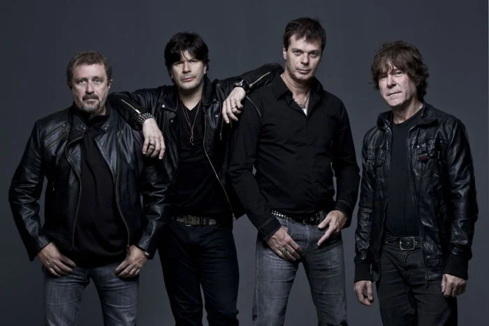

Bandas Clássicas dos anos 80
Nesta página vamos listar alguns artistas e seus sucessos. Para acessar a página principal clique aqui.
RPM

- Rádio Pirata
- Olhar 43
- A cruz e a Espada
- Revoluções por Minuto
U2
- With or Without You
- Sunday Bloody Sunday
- New Year's Day
- Beautiful Day